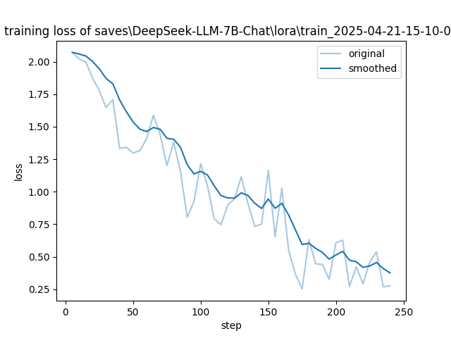
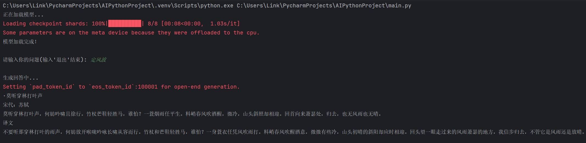
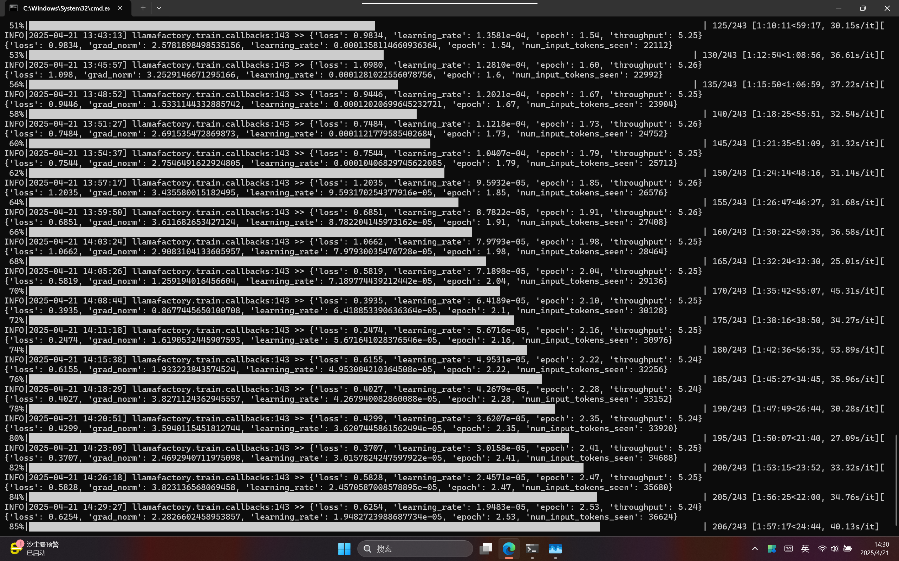

基于 DeepSeek-7B-Chat 微调，让 AI 读懂苏轼
基于 DeepSeek-LLM-7B-Chat 基座模型，使用 168 条苏轼《定风波》相关知识点的训练数据，通过 LlamaFactory 框架进行微调，让模型能够深入理解和生成与《定风波》相关的诗歌赏析、背景知识、主题思想等内容。模型训练于 2025 年 4 月 21 日完成，loss 从初始 2.0 稳定下降至 0.3 左右，表现出良好的收敛性。
微调后的模型能够准确理解《定风波》相关提问并给出有深度的回答，例如对词句的赏析、创作背景的解读等。训练 loss 稳定下降，模型在理解和生成《定风波》相关内容方面表现出显著进步。
点击图片可放大查看


这是我大学第一次参加比赛——计算机设计大赛。说不紧张那是假的，指导老师伊里夏提老师也刚参加工作，经验不算丰富，他叫了 5 个班的学委和我组队，我当队长。结果刚开始就有人觉得太难退队了，换了个女生进来能力不行，没多久也退了，啥也没干。跌跌撞撞混到个校三。
我们做的是微课+AI，剪视频的活交给一个女生，结果马上校赛申报省赛的时候她一拖再拖，大家都等她一个人，后面气不过群里批评了她——她用手机剪视频，连个像样的生产工具都没有。省赛前 3 天，报名费都交了，她退了。临时又拉了个人。最后一天交材料，我早上 10 点就去实验室，饭都没怎么吃，请了一天假没上课，一直忙到晚上 23 点。现在回想，那时候真有奔头啊。
这个 AI 微调其实是校赛以后才做的。校赛用的是 API，评委老师说没啥技术含量，于是我就刻苦钻研自己微调。全部看视频教程自学，用笔记本的显卡跑的，模型参数不大所以也没太吃性能。现在来看，觉得挺牛逼的，哈哈，可能技术大牛看来也就这样吧，但那时候认真的样子，我都佩服我自己。最后跌跌撞撞拿了个省三。据说校三就是炮灰，我们没变成炮灰就是最大的胜利了。
为我干杯，哈哈 🥂